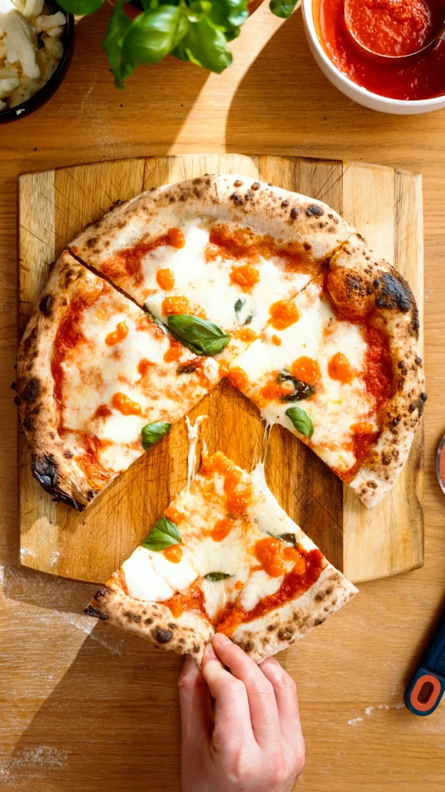
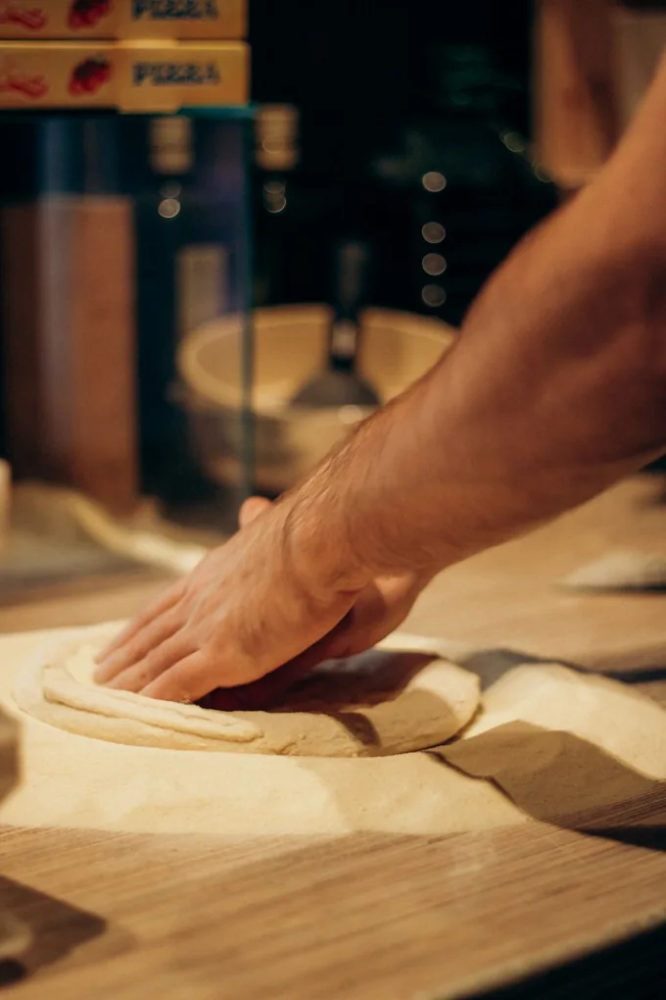

Crocchè di patate
Una crosta dorata e un cuore morbido di patate.
Impasti di scuola casertana, fritti partenopei e una carta che cambia con le stagioni.

Dal primo crocchè all’ultima fetta. Qualche assaggio dal menu dimostrativo.
Vedi il menu completoUna crosta dorata e un cuore morbido di patate.

Pomodoro, fiordilatte, basilico e olio extravergine.

Crema al mascarpone, caffè e una spolverata di cacao.

Giulia Rogoli e Pasquale Caianiello hanno aperto la prima Pizzamore nel 2020 a Lancenigo. Il progetto è cresciuto fino all’attuale pizzeria di via Roma.
In cucina l’impasto napoletano contemporaneo incontra padellini, pale e montanarine. Gli ingredienti di stagione guidano gli abbinamenti.
Via Roma 145/A · Villorba (TV)